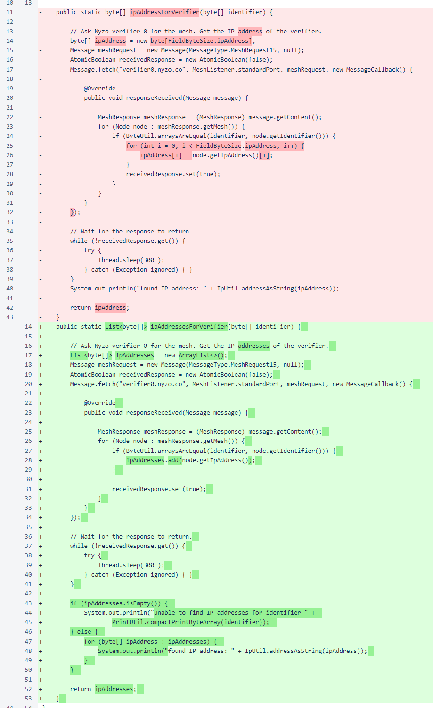
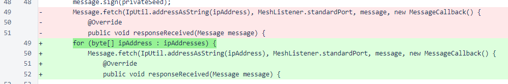
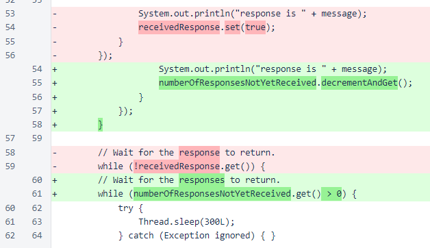

Nyzo version 480 (commit on GitHub) updates the scripts to handle verifiers with multiple IP addresses or whose IP addresses have changed.
This version only updates scripts. It does not affect the verifier or sentinel in any way. There is no reason to update a verifier or sentinel to this version if you are already running version 479. This update will not cause any problems, but it will also not change any behavior of either compared to version 479.
The three scripts currently in the Nyzo distribution are designed to send messages to a verifier for which the user has the private seed. All of these scripts require input of the private seed, from which the public identifier of the verifier is determined. The scripts then send MeshRequest15 messages to verifier0.nyzo.co to get the current mesh.
In the previous version of these scripts, the presence of only one matching node per identifier was assumed. However, if a verifier had changed its IP address or if multiple instances were using the same private key, this assumption was incorrect.
This version corrects the behavior of the scripts by changing the ipAddressForVerifier(byte[] identifier) method of ScriptUtil to ipAddressesForVerifier(byte[] identifier). The previous method returned the IP address of the first node that matched the specified identifier, and the new method returns the IP addresses of all nodes that match the specified identifier.
All three scripts were changed to use this modified method. For brevity, only HashVoteOverrideRequestScript will be discussed here, but the other two scripts were modified similarly.
The first change in the script is the call to the ScriptUtil method. The return type has changed from a single byte array to a list of byte arrays. The check on the provided IP has changed from a check on whether the single IP address was valid to a check on whether the list of IP addresses is empty. The return statement that provided an early exit is not longer necessary, as the rest of the script now does nothing when the list of IP addresses is empty.

The next change is iteration over the list of IP addresses instead of sending a message to a single IP address. This code diff and the corresponding code diffs in the other scripts look more substantial than they are, because the indentation level of the message fetches and callbacks have changed. Very little code has actually changed, though.
Finally, when waiting for the script to return, a counter is used in this version instead of the simple flag of the previous version. When the counter reaches zero, the script is allowed to terminate.
